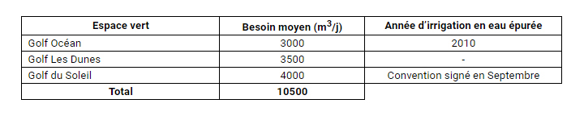

Assainissement Liquide
Volet réutilisation
Introduction
La ville d’Agadir est caractérisée par des ressources en eau limitées. Le bilan actuel des ressources en eau dégage un déficit hydrique important avec un déstockage continu de la nappe qui se traduit par une baisse généralisée du niveau piézométrique. En vu d’atténuer l’acuité de ce déficit hydrique, le plan directeur de l’aménagement intégré des ressources en eau pour le bassin Souss Massa préconise de recourir aux ressources non conventionnelles. Suite aux hautes instructions de sa Majesté le Roi Mohamed VI que Dieu l’assiste et vu que la réutilisation des eaux épurées représente une contribution non négligeable à la réduction du déficit hydrique, la RAMSA s’est lancée dans la réalisation des infrastructures qui permettront de desservir des Golfs et les espaces verts par les eaux épurées.
Production des eaux usées épurées
Le volume des eaux usées traité au niveau secondaire (bassins de sable) est actuellement 10 000 m3/j et sera 30 000 m3/j en fin 2013.
Composante et financement du projet
Pour assurer l’alimentation en eau épurée des Golfs, les infrastructures de desserte des eaux usées épurées de la 1ère tranche, évaluée à 198 Millions de Dirhams, consistent en la réalisation :
- d’un réseau de distribution ;
- de deux modules supplémentaires de traitement secondaire d’une capacité de 20 000 m3/j
- d’un traitement tertiaire
Le financement de cette tranche est arrêté comme suit :
• RAMSA : 37 Millions de dirhams
• AFD : 79 Millions de dirhams
• PNA : 82 Millions de dirhams
Avancement de la première tranche du projet de réutilisation
La réalisation de ces infrastructures a permis d’obtenir les résultats suivants : Le Golf de l’Océan est actuellement desservi par les eaux épurées (4 000 m3/j en moyenne et 6000 m3/j en pointe) de la station de traitement M’Zar. les Golfs des Dunes et du Soleil peuvent être desservis par les eaux épurées en avance par rapport au planning. Les infrastructures réalisées dans cette 1ère tranche permettent de desservir gravitairementles terrains de golfs suivant par les eaux épurées :
Les infrastructures qui restent à réaliser sont comme suit :
- la dernière tranche du secteur gravitaire composé de réseau d’arrosage des espaces verts d’Inzegane d’un linéaire de 4 km.
- Le réseau bas service, comprenant une station de pompage et sa conduite de refoulement, un réservoir de stockage de 3500 m3 et un réseau de distribution de 35km.
- Le réseau haut service, comprenant un réservoir de stockage de 1000 m3 et un réseau de distribution de 16 km.
- Les études techniques du réseau bas service et haut service ont été réalisées par la RAMSA.
© RAMSA
Realisation 2019